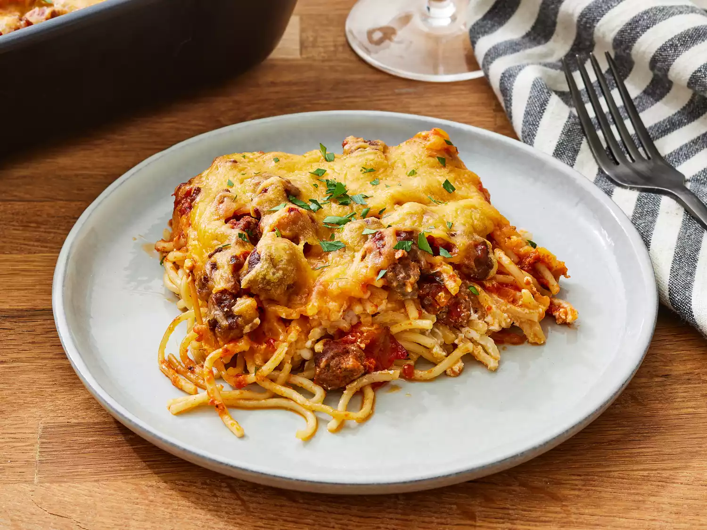

Million Dollar Spaghetti

Description
Million dollar spaghetti is the perfect combination of noodles, lean ground beef sauce, cottage cheese, cream cheese, and sour cream. It's unbelievably good! Serve with garlic bread and salad.
Ingredients
- 1 (8 ounce) package spaghetti
- 1 (8 ounce) package spaghetti
- 1 (16 ounce) jar spaghetti sauce
- ½ cup butter, sliced - divided
- 1 (8 ounce) container cottage cheese
- 1 (8 ounce) package cream cheese, softened
- ¼ cup sour cream
- 1 (8 ounce) package shredded sharp Cheddar cheese
Steps
- Boil the spaghetti in salted water, then drain and set aside.
- Cook the beef on the stove and discard the grease. Transfer to a bowl and mix in the spaghetti sauce.
- Prepare the baking dish, then spread half of the noodles in the bottom.
- Top with the mixture of cottage cheese, cream cheese, and sour cream.
- Cover with remaining spaghetti and butter.
- Pour the beef mixture over the spaghetti and spread in an even layer.
- Bake for 30 minutes, top with Cheese, and continue baking until the cheese is melted.